To begin this module, I will show you how to set up the .Rmd file so that code does not go off the page when rendering in pdf. To do this, you will use the opts_chunk$set() function in the knitr package:
library(knitr)
opts_chunk$set(tidy.opts=list(width.cutoff=60),tidy=TRUE, fig.pos="h")Let’s also install and load packages that we’ll use. primer is a package associated with the book, “A Primer of Ecology with R” (get full pdf version here). RColorBrewer is a package that gives you access to friendly color palettes.
# if you don't have these packages on your computer:
install.packages("primer")
install.packages("RColorBrewer")library(primer)
library(RColorBrewer)Let’s think of a hypothetical population that you have observed over two years. Say there were 100 individuals in the first year, and 150 individuals in the second year. Then, we can say that the growth rate of the population over those two years is \(\frac{N_2}{N_1}=1.5\).
More generally, we can think of the annual growth rate, \(\lambda\) as the number of individuals in one year compared to the year before:
\[\lambda=\frac{N_{t+1}}{N_t}\]
If this rate of growth is constant over \(t\) number of years and the initial population size is \(N_0\), then the population size at year \(t\) is:
\[N_t=N_0\lambda^t\] This is the model of geometric population growth, i.e., a population growing in discrete time steps with constant growth rate.
Exponential population growth occurs when a population is growing in continuous time with a constant growth rate, \(r\):
\[N_t=N_0e^{rt}\]
Here, \(r\) is the instantaneous rate of growth which is the birth rate (births per individual) minus the death rate (deaths per individual) at any given time scale.
Geometric and exponential growth models are very similar, except that they differ in several mathematical properties. But given a certain time unit, we can go between the two models pretty easily. You just have to remember that \(\lambda=e^r\) and \(\ln \lambda=r\)
Let’s now project population growth over 10 years with starting population of 100 and \(\lambda=1.5\). What we need to do is assign the constants (\(N_0\) and \(\lambda\)) and then project the population sizes at \(N_t\) when \(t\) ranges from 0 (intial population) to 10
N0 = 100
lambda = 1.5
t = 0:10
N = N0 * lambda^t
round(N, 0)## [1] 100 150 225 338 506 759 1139 1709 2563 3844 5767# I'm rounding this here because it doesn't make sense to
# have a fraction of an individual.Let’s plot this on a linear scale and log scale.
plot(t, N, type = "o", pch = 19, las = 1)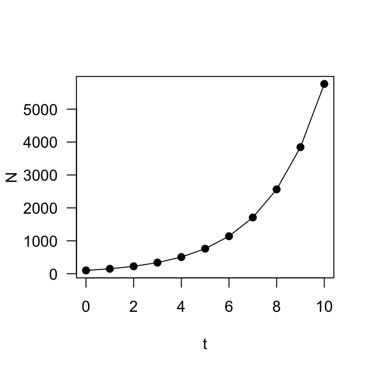
plot(t, N, type = "o", log = "y", pch = 19, las = 1)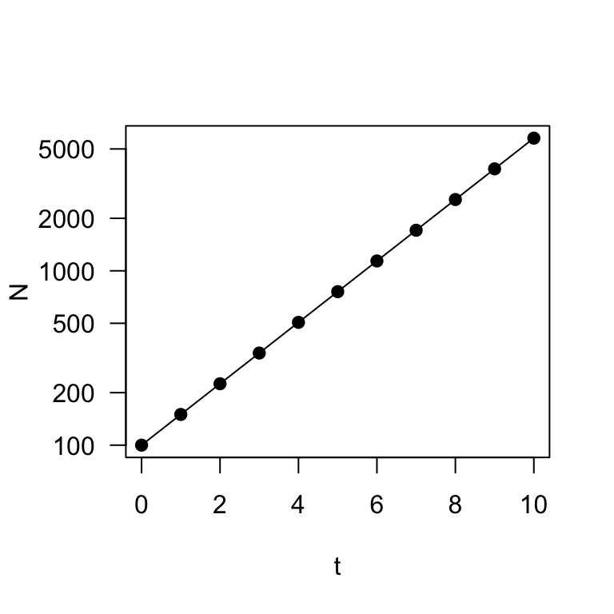
These two plots describe exponential (or geometric) population growth: i.e., population under a constant growth rate.
A digression: Let’s use this opportunity to demonstrate a solution to a question I’ve had a number of times in assignments: how can you plot a two-panel plot and customize the margins on each panel separately? You can do this by setting up the plotting using a layout() function (instead of par(mfrow=)), which will allow us to set the margins separately for each panel. Here’s a demo:
layout(matrix(c(1, 2), nrow = 2))
par(mar = c(0.5, 4, 4, 4))
plot(t, N, type = "o", pch = 19, las = 1, xaxt = "n", main = "Population Growth on Two Scales")
axis(side = 1, labels = F)
par(mar = c(4, 4, 0.5, 4))
plot(t, N, type = "o", log = "y", pch = 19, las = 1)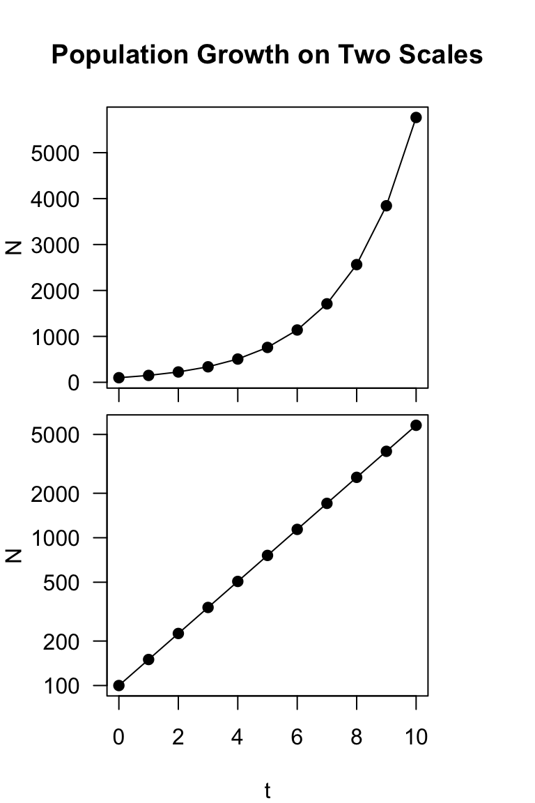
Compare this with:
layout(matrix(c(1, 2), nrow = 1))
par(mar = c(4, 4, 2, 0.5))
plot(t, N, type = "o", pch = 19, las = 1)
par(mar = c(4, 4, 2, 0.5))
plot(t, N, type = "o", log = "y", pch = 19, las = 1)
axis(side = 2, labels = F)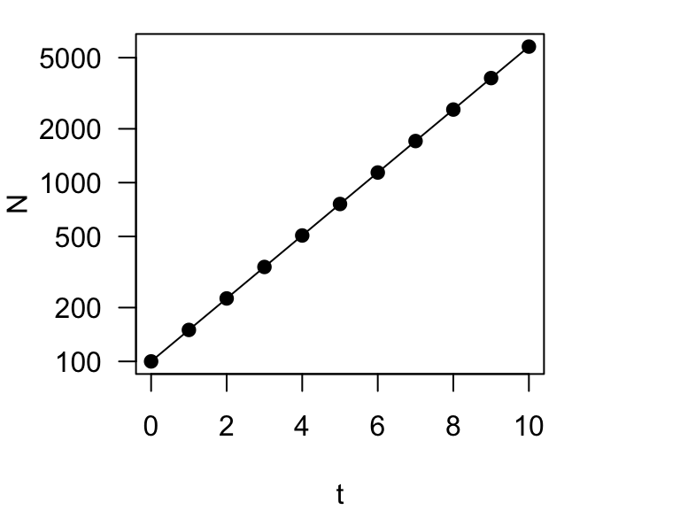
Now, let’s try projecting the population with different growth rates, \(\lambda\). Let’s think about how to do this. We will now have two parameters that vary (\(t\) and \(\lambda\)). This means that we want an output that is a matrix, with one parameter (say \(t\)) on the rows and the other parameter (\(\lambda\)) on the columns. We will do this by employing the sapply() function.
Now, we will define a sequence numbers for \(\lambda\) (here, it will be 0.6, 0.8, 1, 1.2 and 1.4) and then use sapply() to run multiple versions of the population growth rate equation. This function will return a vector or matrix, depending on what is the simplest form.
N0 = 100
lambda = seq(0.6, 1.4, 0.2)
t = 0:10
N = sapply(lambda, function(lambda) N0 * lambda^t)
N## [,1] [,2] [,3] [,4] [,5]
## [1,] 100.0000000 100.00000 100 100.0000 100.0000
## [2,] 60.0000000 80.00000 100 120.0000 140.0000
## [3,] 36.0000000 64.00000 100 144.0000 196.0000
## [4,] 21.6000000 51.20000 100 172.8000 274.4000
## [5,] 12.9600000 40.96000 100 207.3600 384.1600
## [6,] 7.7760000 32.76800 100 248.8320 537.8240
## [7,] 4.6656000 26.21440 100 298.5984 752.9536
## [8,] 2.7993600 20.97152 100 358.3181 1054.1350
## [9,] 1.6796160 16.77722 100 429.9817 1475.7891
## [10,] 1.0077696 13.42177 100 515.9780 2066.1047
## [11,] 0.6046618 10.73742 100 619.1736 2892.5465What we end up with is a matrix with 11 rows corresponding to \(t=\) 0 through 10 and 5 columns corresponding to the five values of \(\lambda\) (0.6, 0.8, 1, 1.2, 1.4). We can plot this output nicely using the matplot() function:
matplot(t, N, las = 1)Let’s make it prettier by creating a color palette in RColorBrewer and using different point types and lines to show the different trajectories.
colors = brewer.pal(5, "Set1")
matplot(t, N, type = "o", las = 1, pch = 1:5, col = colors, lty = 1:5)
legend("topleft", legend = c("0.6", "0.8", "1", "1.2", "1.4"),
title = "lambda", pch = 1:5, lty = 1:5, col = colors, cex = 0.8)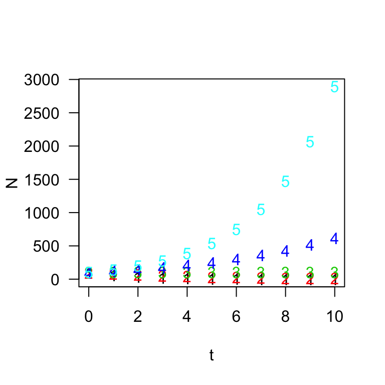
Ok, we can see that there are multiple trajectories here, but it’s kind of hard to see what is goin on at the bottom of the figure. Let’s try plotting the population sizes on a log scale:
colors = brewer.pal(5, "Set1")
matplot(t, N, type = "o", las = 1, pch = 1:5, col = colors, lty = 1:5,
log = "y", yaxt = "n")
marks = c(1, 5, 10, 50, 100, 500, 1000)
axis(side = 2, at = marks, labels = format(marks, drop0trailing = TRUE),
las = 1)
legend("bottomleft", legend = c("0.6", "0.8", "1", "1.2", "1.4"),
title = "lambda", pch = 1:5, lty = 1:5, col = colors, cex = 0.8)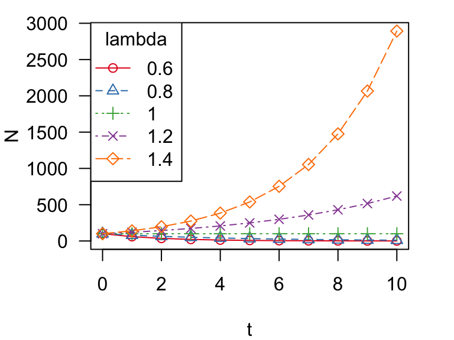
You can see that two lines go up (\(\lambda > 1\)), two lines go down (\(\lambda < 1\)) and one line stays flat (\(\lambda = 1\)). That is, populations increase when \(\lambda > 1\) and vice versa.
Since the instantaneous rate of growth, \(r = \ln\lambda\):
Thus far, we have assumed that population growth rate is constant through time. This is clearly not the case in most natural populations. Even disregarding density-dependent mechanisms, populationg growth rates fluctuate due to different sources of stochasticity (i.e., randomness). One major source of randomness in population growth rate is environmental stochasticity: i.e., random fluctuations in population growth rate due to good and bad years.
Let’s say that a population has a stable population growth rate–i.e., average instantaneous growth rate, \(\bar{r}=0\). But the actual growth rate fluctuates around this average with some variance, \(\sigma_r^2=0.01\). Hence, for each time step (say, 1,000), we could randomly draw a number from a normal distribution with mean of 0 and variance of 0.01 (or \(sd=\sqrt{var}=0.1\)), like so:
set.seed(2)
rs = rnorm(1000, mean = 0, sd = 0.1)
hist(rs, xlab = "r")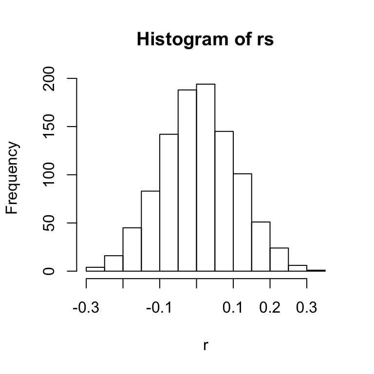
For consistency of modeling purposes, we want to convert this distribution of growth rates to the discrete population growth rate, \(\lambda\), which can also be expressed as \(e^r\). So, the distribution of \(\lambda\) in this case is:
hist(exp(rs), xlab = "lambda", main = "Histogram of lambdas")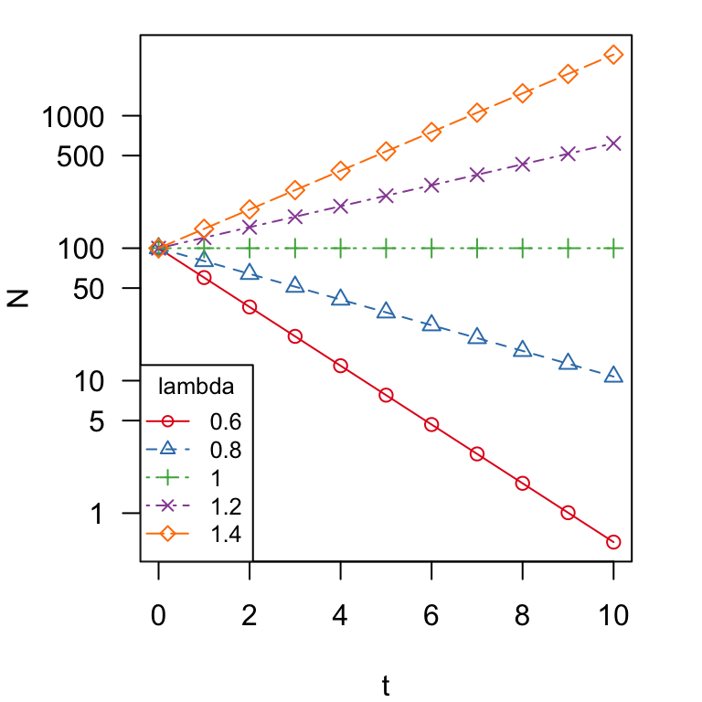
The two distributions look similar, but the top (distribution of \(r\)) is a normal distribution centered around 0, and bottom (distribution of \(\lambda\)) is log-normal distribution–i.e., the log of the value is a normal distribution–centered around 1.
For simplicity, we can also just take the distribution of lambdas from a log-normal distribution directly (output not shown):
set.seed(2)
lambdas = rlnorm(100, meanlog = 0, sdlog = 0.1)
round(lambdas, 2)Ok, now let’s use this method of generating stochasticity in population growth rates to simulate population growth. Let’s remind ourselves what the population projection over 20 years looks like under geometric population growth with \(\lambda=1.2\) and \(N_0=100\).
Here, let’s try generating this plot slightly differently–we will use a for-loop to calculate \(N_t\) for each time step \(t\) and store it as a vector.
N0 = 100 #initial population size
times = 20 #number of years into the future
N = vector(length = times) #empty vector to store pop. sizes
N[1] = N0 #initial population size should be the first N
lambda = 1.2 #growth rate
# start loop: Take previous year's N and multiply by lambda
for (t in 2:times) {
N[t] = N[t - 1] * lambda
}
plot(1:times, N, type = "o", las = 1)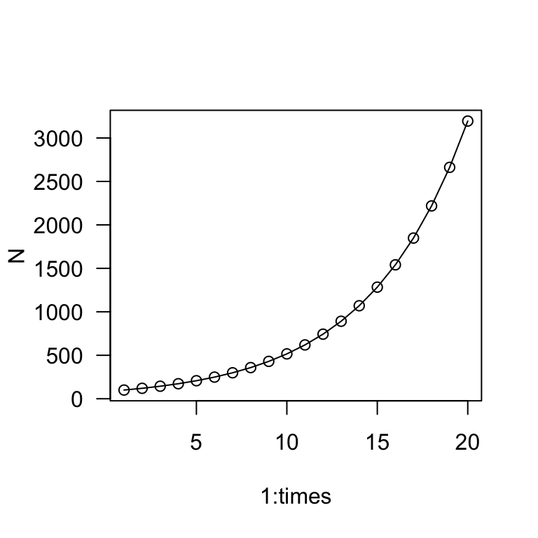
This is a bit more round-about than before, but this lays the groundwork for our stochasticity simulation. Now, let’s simulate a population with the same mean growth rate1 but with standard deviation of 0.1.
set.seed(2)
N0 = 100 #initial population size
times = 20 #number of years into the future
N = vector(length = times) #empty vector to store pop. sizes
N[1] = N0 #initial population size should be the first N
# lambdas--we only need 19 numbers because growth only
# happens between 2 years.
lambda = rlnorm(times - 1, meanlog = 0, sdlog = 0.1)
# start loop: Take previous year's N and multiply by lambda
for (t in 2:times) {
N[t] = N[t - 1] * lambda[t - 1]
}
plot(1:times, N, type = "o", las = 1)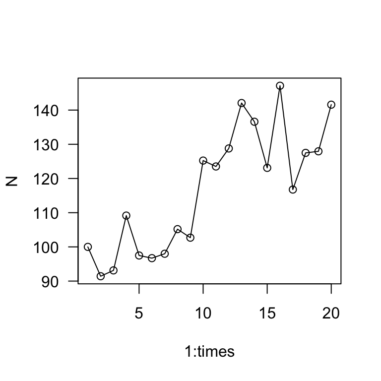
The main take away is that the population grows much more slowly when there is stochasticity in the growth rate. Whereas the exponential growth model predicted the population to be >3,000 in 20 years, this simulation shows the population to be about 140 individuals in 20 years.
set.seed() part of the routine above and try running the script several times to see how the dynamics can change.Now, let’s try running this simulation multiple times (10x) and plotting the results in one figure. To do this, we will employ the sapply() function and run the for-loop sequence inside it. The nice thing about this is that the sapply() function will automatically organize the output as a matrix for us, so that we can directly use the matplot() function to plot the results.
# multiple simulations
set.seed(2)
sims = 10
outmat = sapply(1:sims, function(x) {
times = 20
N0 = 100
N = vector(length = times)
N[1] = N0
lambda = rlnorm(times - 1, meanlog = 0, sdlog = 0.1)
for (t in 2:times) {
N[t] = N[t - 1] * lambda[t - 1]
}
N
})
matplot(1:times, outmat, type = "l", las = 1, ylab = "Population Size",
xlab = "Years")
abline(h = 100, lty = 2)This figure shows the population trajectories of this population under 10 runs of the simulation. Remember that in all of these cases, the mean population growth rate2 is 1.2–i.e., the population is supposed to be growing at a pretty quick pace. Yet, none of the simulations show the population growing much over 20 years. In fact, the population size decreased in 4 out of the 10 simulations. This demonstrates a central concept in population ecology (and conservation biology)–variation in population growth rates tend to slow down population growth.
**
Population Viability Analysis (PVA) is a population modeling method to assess extinction risk of a population or species. It is the mathematical foundation of conservation biology, and it is used worldwide to guide management decisions for threatened species. Here, I will walk through a simplified example of PVA using an example dataset.
Here, we will be using the sparrows dataset from the R package primer. You should have already installed and loaded the package at the beginning of the module. If you haven’t yet, run library(primer) to load it.
The primer package is a package that is associated with a textbook called “A Primer of Ecology with R”, written by Henry Stevens3. The sparrow dataset is based on counts of Song Sparrows (Melospiza melodia) in Darrtown, OH from 1966 to 2003.
Song Sparrow
Let’s load the dataset and look at it:
data(sparrows)
head(sparrows)## Year Count ObserverNumber
## 1 1966 34 1
## 2 1967 40 1
## 3 1968 42 1
## 4 1969 54 1
## 5 1970 49 1
## 6 1971 71 1We can plot the data:
plot(Count ~ Year, data = sparrows, type = "o", las = 1)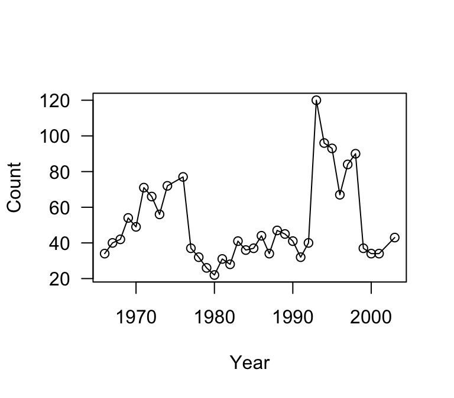
The first thing we can do with this data is to extract the annual population growth rates \(\lambda\) for each pair of years. That is, we need to calculate \(\frac{N_2}{N_1}\), \(\frac{N_3}{N_2}\), \(\frac{N_4}{N_3}\), etc.
counts = sparrows$Count
l = counts[-1]/counts[-length(counts)]
round(l, 2)## [1] 1.18 1.05 1.29 0.91 1.45 0.93 0.85 1.29 1.07 0.48 0.86 0.81 0.85 1.41
## [15] 0.90 1.46 0.88 1.03 1.19 0.77 1.38 0.96 0.91 0.78 1.25 3.00 0.80 0.97
## [29] 0.72 1.25 1.07 0.41 0.92 1.00 1.26hist(l, breaks = 20, main = "Histogram of lambdas", col = "gray")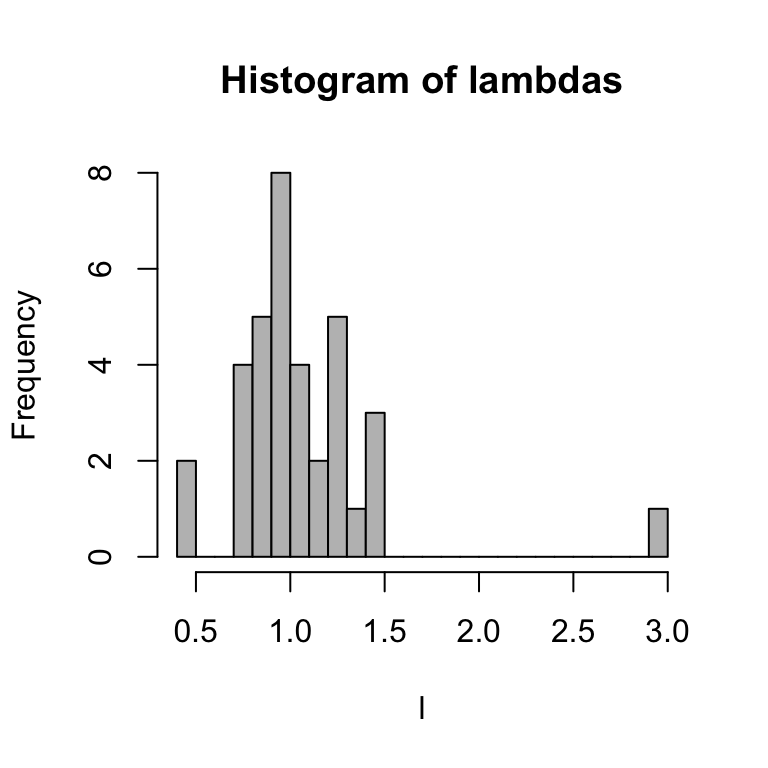
Let’s extract the mean and standard deviation of \(\ln\lambda\):
mean(log(l))## [1] 0.006709703sd(log(l))## [1] 0.3366946You’ll notice that the average \(\ln\lambda=r\) is really close to 0, but slightly above it. This means that, the population is pretty stable at the moment. However, the variance is fairly big.
Let’s just assume that we can estimate the distribution of annual population growth rates \(\lambda\) as a log-normal distribution with those mean-logs and sd-logs. With this, we can generate 50 projected \(\lambda\) values:
set.seed(2)
sim.l = rlnorm(50, meanlog = mean(log(l)), sdlog = sd(log(l)))
round(sim.l, 2)## [1] 0.74 1.07 1.72 0.69 0.98 1.05 1.28 0.93 1.96 0.96 1.16 1.40 0.88 0.71
## [15] 1.83 0.46 1.35 1.02 1.42 1.16 2.04 0.67 1.72 1.94 1.01 0.44 1.18 0.82
## [29] 1.31 1.11 1.29 1.12 1.45 0.91 0.78 0.82 0.56 0.74 0.83 0.93 0.88 0.52
## [43] 0.76 1.91 1.24 1.97 0.91 0.98 0.95 0.67Let’ use this to simulate this Song Sparrow population over the next 20 years (or rather, from 2003 to 2023).
First, let’s look at the population size in 2003, the last year in this dataset:
tail(sparrows)## Year Count ObserverNumber
## 31 1997 84 2
## 32 1998 90 2
## 33 1999 37 3
## 34 2000 34 3
## 35 2001 34 3
## 36 2003 43 3So we will use N0 = 43 as our starting point, and simulate the population over the next 20 years.
# Single simulation
set.seed(2)
time = 21
N0 = 43
N = vector(length = time)
N[1] = N0
sim.l = rlnorm(time, meanlog = mean(log(l)), sdlog = sd(log(l)))
for (t in 2:time) {
N[t] = N[t - 1] * sim.l[t - 1]
}
par(mar = c(4, 4, 1, 4))
plot(1:(time), N, type = "o", las = 1, xaxt = "n")
axis(side = 1, at = c(1, 6, 11, 16, 20), labels = c(2003, 2008,
2013, 2018, 2023))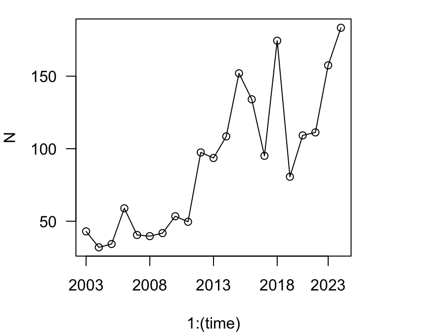
Using the same principles as the stochastic simulations in Section 3, we can also conduct multiple simulations and plot the results
set.seed(2)
sims = 5
outmat = sapply(1:sims, function(x) {
time = 21
N0 = 43
N = vector(length = time)
N[1] = N0
sim.l = rlnorm(time, meanlog = mean(log(l)), sdlog = sd(log(l)))
for (t in 2:time) {
N[t] = N[t - 1] * sim.l[t - 1]
}
N
})
par(mar = c(4, 4, 1, 4))
matplot(1:time, outmat, type = "l", las = 1, lty = 5, ylim = c(0,
200), ylab = "N", xaxt = "n", xlab = "Year")
axis(side = 1, at = c(1, 6, 11, 16, 20), labels = c(2003, 2008,
2013, 2018, 2023))Now, let’s say we want to ask a question about extinction risk of this population. For example, we might ask what are the chances that this population goes extinct within 100 years, given the observed pattern in population sizes? To figure this out, we need to conduct a large number of simulations (in this case, let’s do 1,000x) projecting the population for 100 years (or 101, if starting from year 0). Then, we want to ask: in how many iterations of this model does the population size dip below 2 (the minimum number of individuals needed to reproduce)?
Let’s start by doing the simulations in the same way as above, but changing sims=1000 and time=101.
set.seed(2)
sims = 1000
outmat = sapply(1:sims, function(x) {
time = 101
N0 = 43
N = vector(length = time)
N[1] = N0
sim.l = rlnorm(time, meanlog = mean(log(l)), sdlog = sd(log(l)))
for (t in 2:time) {
N[t] = N[t - 1] * sim.l[t - 1]
}
N
})
dim(outmat)## [1] 101 1000So, what we have now is a matrix with 101 rows (year 0 to year 100), and 1,000 columns, each representing a single iteration of the simulation. Thus, we could figure out how many columns has at least one time point in which N < 2 by using the apply() function to ask whether the minimum of each column is less than 2.
# which columns have at least one value less than 2?
minpop = apply(outmat, 2, function(x) min(x) < 2)
sum(minpop + 0)/sims #proportion of columns with TRUE## [1] 0.279Thus, there is approximately a 28% chance that the population will go extinct within 100 years due purely to stochasticity.
Now, this is a really simplified version of PVA–it does not account for uncertainty in the estimates of mean and sd of \(\ln\lambda\), nor does it take into account any other realistic factors such as temporal autocorrelation of growth rates, density-dependent factors, habitat change/loss, etc. etc. But I hope that you got a sense for how to use R for simulating complex dynamics.